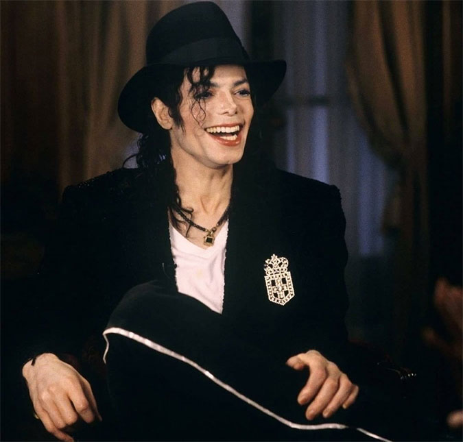
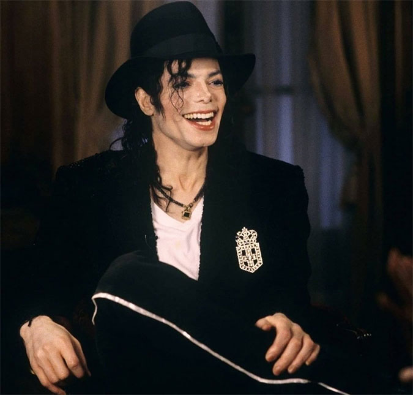

Mesmo morto, para quem acredita na hipótese, Michael Jackson nunca deixou de ser reverenciado na indústria fonográfica e segue sendo uma máquina
de fazer dinheiro — foram pelo menos US$ 3 bilhões desde quando ele
foi encontrado sem vida, vítima de uma overdose de medicamentos em sua mansão em Los Angeles (EUA), aos 50 anos.
Há algum tempo, ele lidera o ranking da revista Forbes entre as celebridades póstumas que mais lucram ano após ano.
performance dele impressiona mesmo no mundo dos vivos
, onde ele aparece sempre entre os primeiros.
O desempenho é o resultado de uma carreira vitoriosa, mas cheia de contradições. Se, por um lado, o cantor foi coroado muito cedo como o rei do pop, por conta de tantos sucessos e por ser um showman,
por outro, escândalos na vida pessoal mancharam sua reputação e impediram que ele permanecesse mais tempo no topo.
Diferentemente de Madonna , que, mesmo entre erros e acertos, conseguiu se tornar uma das figuras femininas mais impostantes da história.
 

Michael Jackson é o maior artista de todos os tempos segundo o Guinness Book por ter vendido mais de 1,5 Bilhão de Gravações (RIAA) em toda a sua carreira, se manter no topo dos charts musicais desde 1969, ser alguém com grande influência em meios sociais e culturais, por ter recriado a arte da música, da dança e das artes, se caracterizando como o Rei da música popular.
Estima-se que desde o inicio da sua carreira até o ultimo dia de sua vida, o nome de Jackson havia conquistando U$15.133.444.560 dóláres, tendo então o nome mais caro dos show business.
Jackson é o ser humano com maior número de recordes no Guinnes Book, batendo mais um recorde.
A primeira turnê solo de Michael incluiu 123 concertos em 15 países, em 4 continentes. Teve um público total de 4,4 Milhões de pessoas e entrou para o Guinnes Book como a turné que mais rendeu no século XX, cerca de 125 milhões de dólares. Também entrou para o Guinnes os seus 7 concertos esgotados no Wembley Stadium, em Londres, com um público total de 504 mil pessoas, quebrando marcas de artista como The Beatles e Rolling Stones.
3,5 milhões de espectadores em 69 shows - lembrando que a Dangerous Tour foi interrompida em Novembro de 1993 no México e depois cancelada por problemas de saúde de Michael e uma acusação de pedofilia. Transmitido pela rede de TV HBO, o show da turnê realizado em Bucareste, na Romênia, no Estádio Nacional Lia Manoliu, o primeiro de um popstar americano em um país pertencente a Cortina de Ferro, foi visto por cerca de 500 milhões de pessoas mundialmente durante as diversas transmissões feita pela HBO entre 1992 e 1993, entre transmissões de rádio e de TV. Por esse show, considerado histórico para a época, Michael recebeu o Cable Ace Award por honra ao mérito. Na Ásia, a turnê também levantou uma bem-sucedida campanha contra a pirataria. Na Cidade do México, no México, ele apresentou-se para uma audiência estimada em 550 mil pessoas em 5 concertos esgotados (aproximadamente 110 mil por show), entre outubro e novembro de 1993, e entrou para o Guinness Book, quebrando o recorde de lotação simultânea de shows de uma mesma turnê em um mesmo local, estabelecido pelo próprio Michael durante a Bad Tour, onde fez sete shows esgotados no Estádio de Wembley, em Londres, entre julho e agosto de 1988, para um publico total de 504 mil fãs.
Segunda turnê que levou o maior público aos shows (4,5 milhões de espectadores em 82 shows), foram cerca de 53 mil pessoas por show pago. Esse fato faz de Jackson o primeiro e único artista masculino solo ou banda a conseguir tal recorde. Também durante essa turnê, aproximadamente 60.000 pessoas assistiram o show de Jackson em Luxemburgo, o que representa cerca de 20% da população do pequeno país europeu, na época, de 300 mil habitantes. A turnê também fez HIStory, com ela, Michael apresentou-se pela primeira vez na África. Depois de oito anos sem apresentar-se nos Estados Unidos, Michael Jackson chegou ao Havaí em Janeiro de 1997 para dois concertos no Estádio de Aloha, para um público total de 120 mil fãs, foram vendidos em tempo recorde, em menos de 24 horas. Durante sua parada na Austrália, Jackson fez 9 concertos consecutivos com lotação esgotada em cinco cidades diferentes - Sydney, Brisbane, Melbourne, Adelaide e Perth - para um público de aproximadamente 350 mil espectadores. Quase um milhão de pessoas assistiram Michael Jackson durante a passagem da HIStory Tour pela Alemanha em 1997, nos 10 concertos realizados nas cidades de Berlim, Bremen, Cologne, Gelsenkirchen, Hockenheim, Kiel, Leipzig e Munique (sendo dois shows nesta última), fazendo do cantor o artista com maior público em menor tempo de um unico concerto.